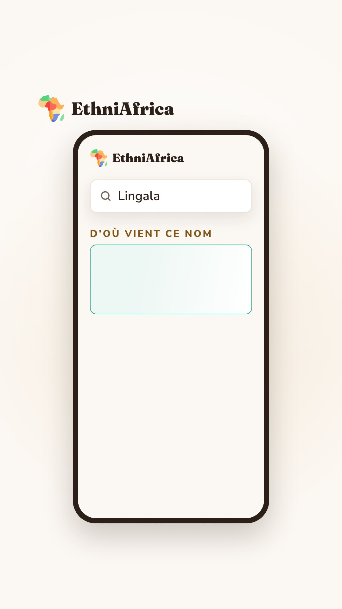
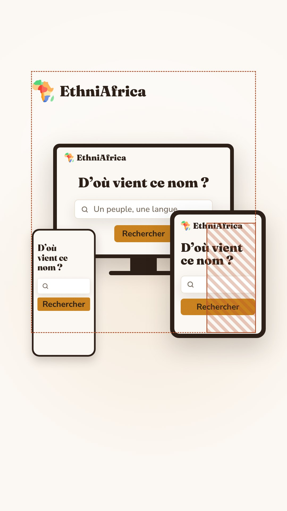

Étape 1 sur 3 · révision 2
Le générique d'intro et le générique de fin, communs à toutes les vidéos de série. Ce sont des clips muets en 1080 × 1920 à 30 images par seconde : la voix du reel se pose dessus. Les images sont montrées à 430 px, la largeur d'un téléphone dans le fil.
À valider avant l'animatic
« Avec EthniAfrica, on part des noms qu'on emploie en français pour mieux comprendre l'Afrique et ses peuples. »


« L'importance de connaître nos noms. Vous pouvez continuer la recherche sur EthniAfrica, lien en profil. »
Minutage estimé sur une voix à 16 caractères par seconde, à recaler sur la piste réelle du reel à l'étape de l'animatic. Une image dure 33 ms.
| Images | Secondes | Mot dit | À l'écran |
|---|---|---|---|
| 0–4 | 0,00–0,15 | — | Le parchemin seul : la carte précédente part pendant les 150 premières ms du changement de 300 ms. |
| 5–23 | 0,15–0,75 | « Avec EthniAfrica » | Le logo et EthniAfrica montent en fondu. |
| 29–59 | 0,95–1,95 | « on part des noms » | L'ordinateur, la tablette puis le téléphone se posent, 200 ms d'écart, avec un léger rebond. |
| 83–101 | 2,75–3,35 | « en français » | On plonge dans le téléphone ; l'ordinateur et la tablette s'effacent en douceur. |
| 99–107 | 3,30–3,55 | « pour mieux » | Le doigt arrive et touche le champ. |
| 113–134 | 3,75–4,45 | « comprendre l'Afrique » | Le nom se tape, lettre à lettre. |
| 135–152 | 4,50–5,05 | « et ses » | Le doigt glisse vers Rechercher et appuie. |
| 153–175 | 5,10–5,83 | « peuples. » | Le champ monte, « D'où vient ce nom » apparaît, l'encadré de réponse arrive encore vide. |
| 175–180 | 5,83–6,00 | — | Image fixe, pour le changement de carte qui suit. |
| Images | Secondes | Mot dit | À l'écran |
|---|---|---|---|
| 0–4 | 0,00–0,15 | — | Changement de 300 ms depuis la carte « Nous pensons ». |
| 5–23 | 0,15–0,75 | « L'importance de connaître nos noms. » | La phrase monte, seule, lue pendant qu'elle est dite. |
| 66–92 | 2,20–3,05 | « Vous pouvez continuer » | La phrase rejoint le haut de l'image et y reste ; le téléphone remonte avec le nom déjà tapé. |
| 86–108 | 2,85–3,60 | « la recherche » | Le doigt appuie sur Rechercher. |
| 105–156 | 3,50–5,20 | « sur EthniAfrica » | Le champ monte ; « Vous avez cherché… » puis « Ce peuple se nomme lui-même… » entrent ligne à ligne. |
| 150–186 | 5,00–6,20 | « lien en profil. » | « Les appellations », puis les noms un à un, 130 ms d'écart. |
| 188–203 | 6,25–6,75 | — | Le téléphone redescend et s'efface. |
| 197–227 | 6,55–7,55 | — | L'invitation, le logo, ethniafrica.com et le repère @ethniafrica entrent sous la phrase. |
| 227–240 | 7,55–8,00 | — | Tenue. |
On reconnaît la série avant même de lire un mot. Le parchemin et la recherche sont ceux du film de soutien, déjà publiés : le spectateur retrouve un monde qu'il a vu.
L'ordinateur, la tablette et le téléphone disent en une seconde que le site est ouvert à tous, partout. On entre ensuite dans le téléphone, l'appareil sur lequel le spectateur regarde la vidéo : il se voit faire la recherche.
La voix vient de dire « l'origine du nom Burkina Faso » ; l'intro tape « Burkina Faso ». La recherche est lancée, mais la réponse n'arrive pas : l'encadré reste vide. C'est l'épisode qui répond. La question est ouverte et refermée dans la même vidéo, rien n'est promis que la vidéo ne tienne pas.
Le même téléphone revient avec le nom déjà tapé, et cette fois la réponse s'affiche. Le spectateur voit ce qu'il trouvera en suivant le lien : la promesse de « lien en profil » est montrée avant d'être faite.
« Peul » garde sa place parmi les appellations, marqué « votre recherche ». Rien n'est barré : partir du nom employé en français ne veut pas dire qu'il est faux. Un test le vérifie.
« L'importance de connaître nos noms. » est lue pendant qu'elle est dite, puis reste au-dessus de la recherche jusqu'à la fin : voir et entendre la même phrase aide à la retenir.
Instagram, TikTok et YouTube Shorts affichent tous le nom du compte en bas à gauche de la vidéo. La flèche dirige le regard vers ce nom, là où se trouve le lien.
| Calque | Générique | Valeur par défaut | Règle |
|---|---|---|---|
name |
Intro et fin | Peul | Le nom de l'épisode, tapé dans le champ. |
layers/<nom>.json |
Fin | peul.json |
La réponse de la page de ce nom : la phrase « Vous avez cherché… » et les appellations, recopiées de la page en ligne. La page doit exister avant la publication. |